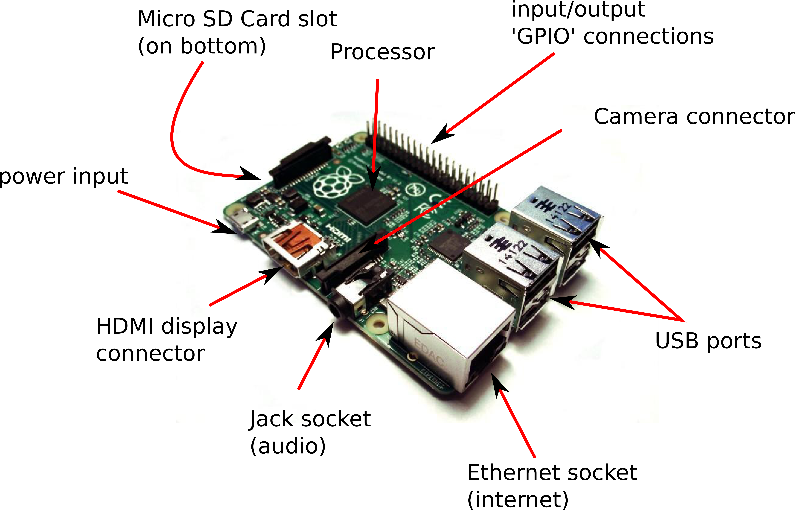
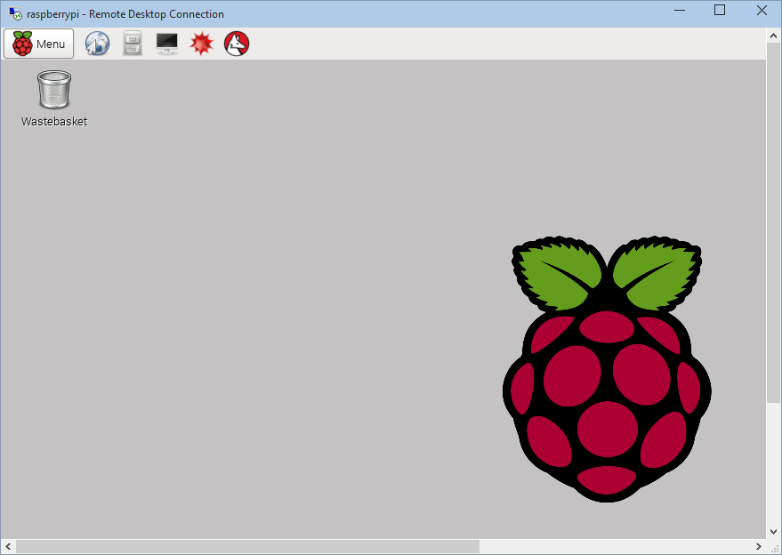
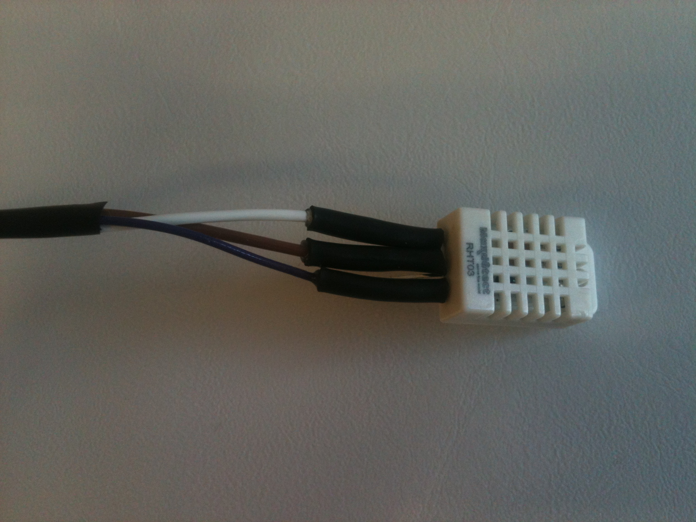
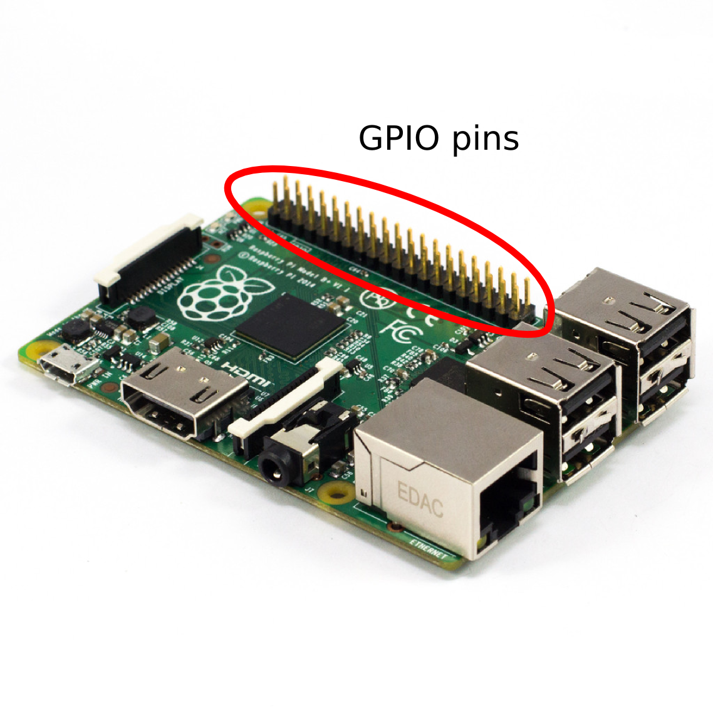
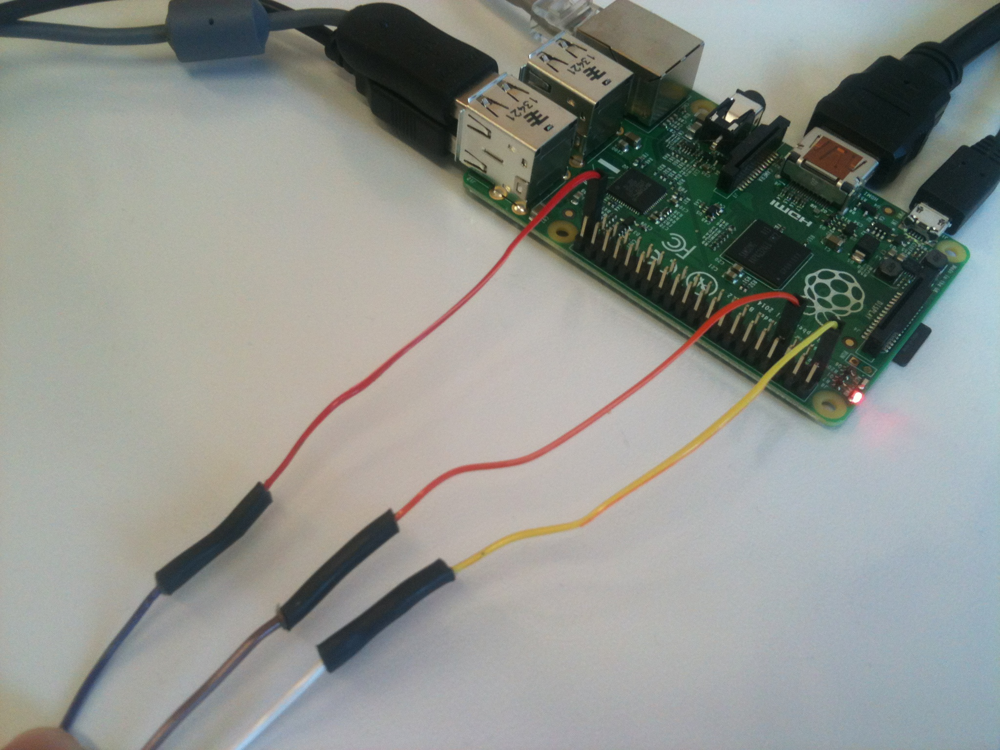
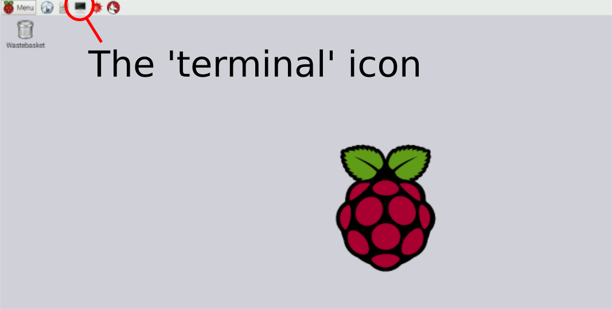
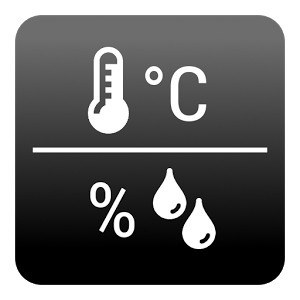

Generating Genius Computing Exercise
These instructions will lead you through how to build your
temperature and humidity sensor.
What is the Raspberry Pi computer that we will be using?

- USB keyboard
- USB mouse
- Ethernet cable (connected at the
other end to a network socket
- HDMI cable connected at the other
end to TV or monitor
- Micro SD card

Setting up the sensor hardware



Background: If you are interested in the details about this sensor see here. It measures temperature by measuring how hard it is to push electricity through a thermistor (a conductor that conducts better at higher temperatures and worse at lower temperatures), it then measures humidity by measuring how efficiently a special capacitor inside the sensor can work - this works because moist air allows the charge held by the capacitor to leak away. Rather than us having to convert the resistance and capacitance within this sensor into a temperature and humidity as we would have to do if this was an analogue sensor, the DHT22 converts this information into a digital signal. This digital signal is communicated to the Raspberry Pi by very briefly diverting the current that was coming in from the 3.3v pin and out to the ground pin, across to the middle (brown) wire coming out of the sensor. The length and pattern of this voltage across the middle wire is encoding the information about temperature and humidity. All we need to do therefore is measure when there is a voltage change across out GPIO pin on the Raspberry Pi and we can work out what the temperature and humidity is - simple!
- The white wire coming from the sensor to the 3.3v pin (see
diagram
above)
- The brown wire coming from the sensor to the GPIO pin 4
- The purple wire coming from the sensor to one of the ground pins
REMEMBER THAT THE COLOURED WIRES THAT PUSH ON TO THE GPIO PINS ARE
RANDOM COLOURS, IGNORE THE COLOURS OF THESE!

Setting up the software

- git clone https://github.com/adafruit/Adafruit_Python_DHT.git
- cd Adafruit_Python_DHT
- sudo apt-get upgrade
- sudo apt-get update
- sudo apt-get install build-essential python-dev
- sudo python setup.py install
-
sudo python
/home/pi/Adafruit_Python_DHT/examples/AdafruitDHT.py
22 4

Setting up the final piece of software which will log the temperature and humidity data
- cd
- wget http://people.exeter.ac.uk/ph290/ftp/generating_genius.py
- Now open the file in a text editor (a program to edit text - here it is called leafpad, but think of this as an alternative to Microsoft Word) by typing:
- leafpad generating_genius.py
- Edit the file that says group = 'groupx'
to contain the
number relating to your group e.g. group = 'group1',
save the file, then close the text editor
- We can now run this script by typing:
- sudo python generating_genius.py
- Can you see the data appearing on the web here - but note that here will be a delay of about a minute before this data starts appearing:
- Group1: https://thingspeak.com/channels/105075
- Group2: https://thingspeak.com/channels/105074
- Group3: https://thingspeak.com/channels/105078
- Group4: https://thingspeak.com/channels/105079
- Group5: https://thingspeak.com/channels/105080
- Group6: https://thingspeak.com/channels/105081
- Group7: https://thingspeak.com/channels/105083
- Group8: https://thingspeak.com/channels/105084